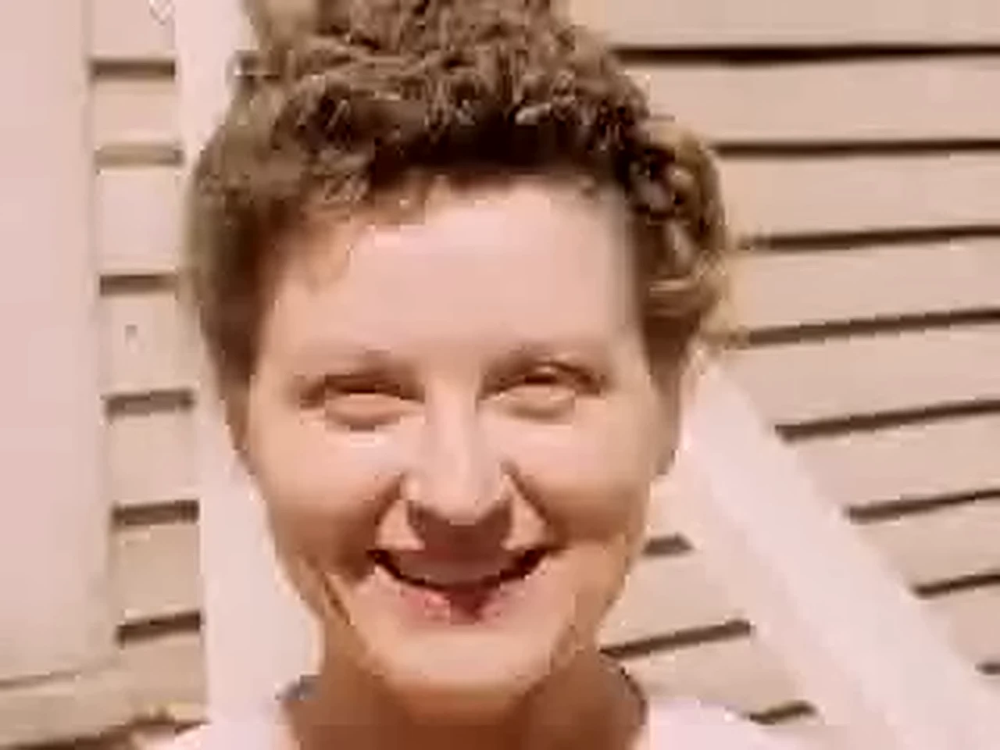

Low-resolution video
How to upscale 240p and 360p video without the blocks
Put a 240p download or an early phone clip straight into an upscaler and it often comes out bigger, sharper and somehow worse: faces turn into mosaics and flat walls grow a grid. The upscaler is doing its job. It's sharpening what you gave it, and most of what a tiny, heavily compressed clip holds is compression damage. Clean that up first, then upscale once.
Updated
See the difference
We took a clean frame, saved it as a 320×240 clip compressed about as hard as an old upload, then blew it up to 1280×960 twice with the same resize and the same sharpening. Once straight, and once after an ffmpeg deblock pass. Drag the handle.

Left: upscaled straight. Right: deblocked first. No AI in either one. This is only the clean-up step, so you can see what it does on its own. The original 320×240 frame is here too.

Why the blocks get bigger
To save space, video compression cuts each frame into small squares, usually 8×8 pixels, and throws away most of the detail inside each one. At 240p on a small phone screen you barely notice. Blow it up four times and every square becomes a 32×32 tile with a hard outline.
An upscaler, AI or not, is built to find edges and make them crisp. The line between two blocks is a hard, straight edge, so it gets sharpened like any other. And once that's happened it's baked in: no filter afterwards can tell the grid from the picture. The fix has to come first, while the blocks are still small.
1. Find the least compressed copy
Every re-upload and every trip through a messaging app compresses a clip again, and the damage stacks. The original file from the old phone or the first download beats a copy someone sent you. At the same resolution, the bigger file is usually the better one.
2. Work out what kind of clip it is
Old video comes in two kinds, and they need opposite treatment.
- Tape and DVD (480i or 576i). VHS, Hi8 and MiniDV captures and DVDs are usually interlaced: anything that moves gets a striped, combed edge. They need deinterlacing and a light denoise. More on that in the VHS guide.
- Internet and early phone video (288p or less, sometimes 360p). These are usually progressive, so there's nothing to deinterlace, but they're crushed by compression. They need deblocking.
The rule that matters: if it's 288 pixels tall or less, assume it's full of blocks, even if it looks fine at its own size. Deinterlacing one of these just throws away vertical detail you can't spare.
3. Deblock before you upscale
A good deblock pass makes the clip look a little softer at its own size. That's expected, and it's the point: you've taken out the fake detail (the grid) so the upscaler can work on the real detail underneath. Go easy on everything else. A heavily denoised clip looks waxy, and an upscaler will happily sharpen wax.
4. Upscale once, to 1080p
1080p already stretches a 360p clip three times each way and a 240p clip four and a half. That's plenty. Going to 4K doubles the file without adding anything the source had. Do it in one pass: upscale, restore, upscale again stacks each step's artifacts.
5. Keep in-between files lossless
If your tools hand frames from one step to the next, don't let them save JPEGs along the way. Every JPEG adds a fresh layer of 8×8 blocks, and the sharpening at the end brings all of them out. We learned this the hard way in our own pipeline. Use PNG for frames, and a near-lossless setting for any in-between video.
Doing it yourself with ffmpeg
The free command-line tool ffmpeg has everything you need for the clean-up. Run it before whichever upscaler you use. For a clip 288 pixels tall or less:
ffmpeg -i lowres.mp4 \
-vf "spp=5,deblock=filter=strong:block=8,hqdn3d=3.2:2.4:5.5:4.0" \
-c:v libx264 -crf 12 -preset fast -c:a copy lowres_clean.mp4spp=5re-runs the compression maths at shifted positions and averages the results. It's very good at removing blocks and ringing without blurring real edges much.deblocksmooths what's left along the 8×8 grid.hqdn3dcleans up the “mosquito” noise around edges that the other two leave behind.-crf 12keeps the cleaned file close to lossless, so you don't add a new layer of blocks before the upscaler sees it.
For an interlaced tape or DVD capture, deinterlace and denoise lightly instead:
ffmpeg -i tape.mp4 -vf "yadif=0:-1:0,hqdn3d=2.0:1.5:3.0:2.5" \
-c:v libx264 -crf 12 -preset fast -c:a copy tape_clean.mp4Not sure which you have? ffprobe -v error -select_streams v:0 -show_entries stream=height,field_order input.mp4 prints the height, and a field order of tt or bb means interlaced.
What to expect
Cleaned up and upscaled, a 240p clip looks like a soft but clean video: real faces instead of mosaics, walls that are actually flat. It won't look like it was shot in HD, and anything promising that is inventing the difference. Tape usually scales better than its resolution suggests, because a 480i capture holds more real picture than a 240p upload.
Doing it with Phoenix
Phoenix Upscaler does this for you. It reads each clip, deinterlaces only when the clip is interlaced, and its restoration models are trained to repair compression damage rather than sharpen it. On clips 288 pixels tall or less, the Generative mode runs the same deblock pass shown above before the detail model sees the picture. It runs on your own Windows or Linux PC, NVIDIA or AMD, for $129 once. The free download restores 60-second clips with a small watermark, so try one of yours first.
Questions
Can you upscale 240p video to 1080p?
Yes, and with the blocks cleaned up first it comes out as a soft but clean picture that fills a modern screen. It won't look like it was filmed in HD. A 240p frame holds about a twenty-seventh of the pixels of a 1080p one, and nothing honest invents the rest.
Why does my video look worse after upscaling?
Usually because the upscaler sharpened the compression blocks. To an upscaler, the straight edge between two blocks looks like real detail, so it makes it crisper. Deblock the clip before upscaling and the problem mostly goes away.
Should I upscale 360p to 4K?
Rarely. 1080p already stretches a 360p clip three times in each direction. 4K doubles the file size again without adding detail the source never had. Pick 4K only if your editing project or TV insists on it.
Is deinterlacing the same as deblocking?
No. Deinterlacing fixes the striped, combed edges on moving things in tape and DVD footage. Deblocking smooths the square grid that heavy compression leaves. Deinterlacing a progressive internet clip just throws away vertical detail.
Can I fix blocky video for free?
Yes. The free command-line tool ffmpeg has the deblocking filters described on this page, and the commands are above. Phoenix Upscaler's free download also restores 60-second clips, with a small watermark, so you can compare.
Related: Old phone videos · Restoring VHS tapes · How to restore old video
Try it on your own clip
The free download restores 60-second clips with a small watermark. Pick the blockiest one you have and judge the result yourself.
Download Phoenix